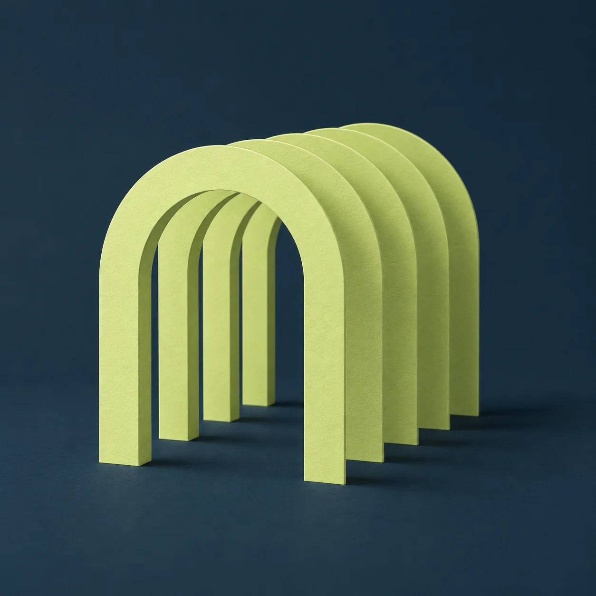

The attorney’s perspective
Our founder’s attorney found existing tools conceptually disconnected and poorly aligned with the work of a practice.
Legal case management
For small practices. For the whole matter.
We’re designing Arca to support counsel and clients where disconnected tools fall short.
Discover Arca
Where Arca began
Our founder’s attorney found existing tools conceptually disconnected and poorly aligned with the work of a practice.
As a client and software engineer, our founder saw complex tasks left unsupported—even where modern tooling and AI could help.
Our approach
Documents, decisions, and client requests are parts of one matter. We’re designing for those connections.
Complex tasks need more than a place to store their results. We’re exploring how modern tooling and AI can help.
AI can assist with the work. Counsel remains responsible for the advice. We’re designing assistance around attorney review.
In development
Arca is in development. More to come from Statera Labs.